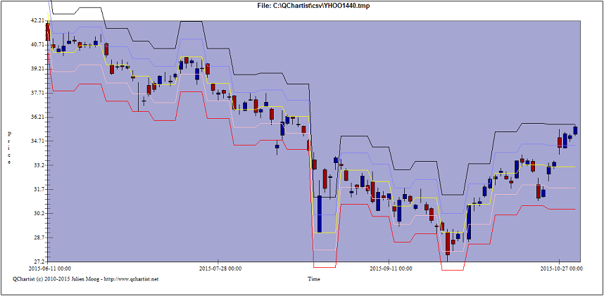

- In the File > Data source open yhoo with weekly timeframe
- Once the weekly chart is displayed on screen, click on Edit > attribute
timeframe and select 10080 (10080 minutes = weekly) as chart TF. Close the
timeframe attribution window.
- Open the data source window again and open yhoo with a daily timeframe
(you don't need to close the previous weekly chart)
- Click on Tools > Indicators, click on ADR112 cpp and on Properties. Choose
Weekly for timeframe basement and click OK. In the indicators window, click
on "Add indicator" for ADR112 cpp and click OK.
Here is the result :
